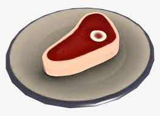

This is the Buffalo Steak Sandvich recipe!
Here you will learn how to make raw meat.
Ingredients:
Milk, Milk, Milk, Milk, Milk, Milk, Milk, Buffalo meat, Cow, Big Cow
How to make:
- Step 1: Pour Milk in bowl
- Step 2: Pour Milk in bowl
- Step 3: Pour Milk in bowl
- Step 4: Pour Milk in bowl
- Step 5: Pour Milk in bowl
- Step 6: Pour Milk in bowl
- Step 7: Pour Milk in bowl
- Step 8: Take out Buffalo Meat
- Step 9: Put Buffalo Meat in Milk
- Step 10: Put steak in Milk
- Step 11: Wait until milk evaporates
And you're done!
